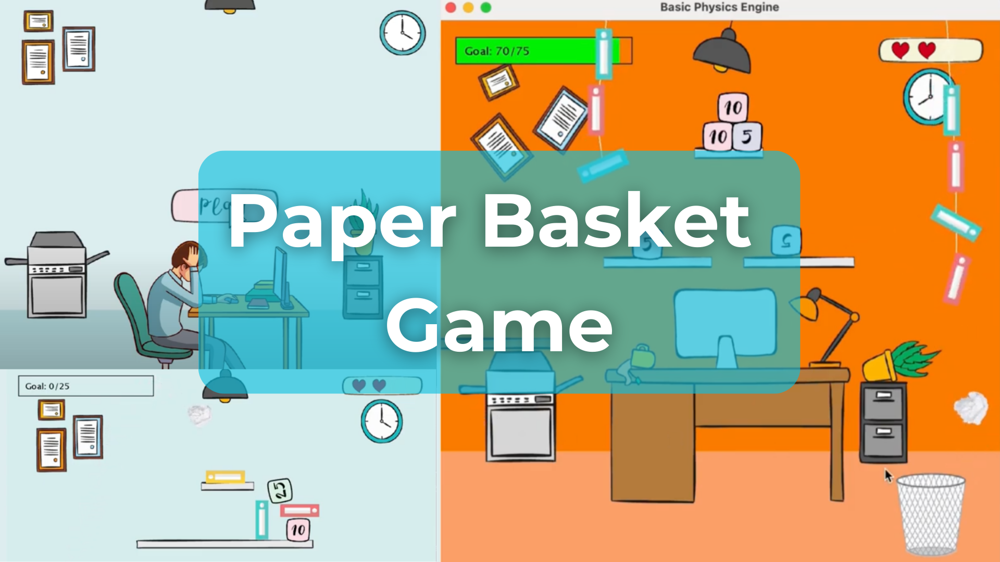

UNIVERSITY PROJECT / PHYSICS GAME
Paper Basket
Game.
My 2D physics game about turning an office daydream into a playable challenge.

About the game
Bored Peter throws crumpled paper into a bin, then turns the objects around his desk into targets. What starts as a distraction becomes a game of angles, collisions and careful shots.
How it plays
Pull back with the mouse and release to launch a paper ball. The direction and distance of the drag affect the shot. Knock scoring objects into the bin and reach the target score before running out of lives.
My development work
I built the game in Java with JBox2D to explore a 2D physics playground. Its mechanics explore collision, friction, angular velocity and tension, with barriers, shelves and chain obstacles shaping each level.
Hand-drawn visuals reinforce the idea of a game imagined at a desk. Level targets, a limited number of attempts and obstacles create an increasing challenge.
Project documentation
In my project report, I explain the gameplay, my choice of physics engine, paper throwing, scoring, obstacle implementation, physics behaviour and what I learned during development.